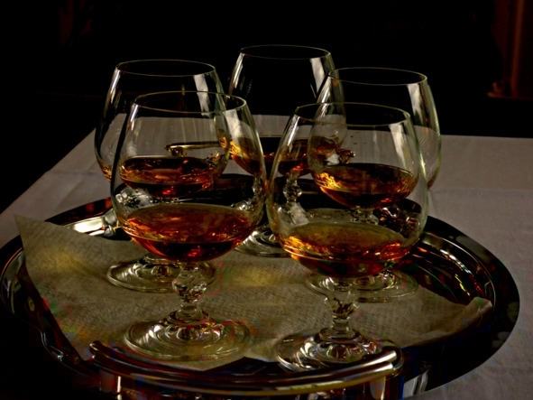
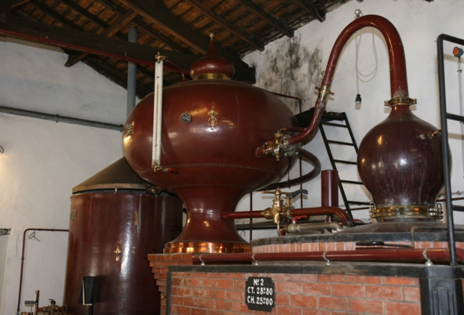
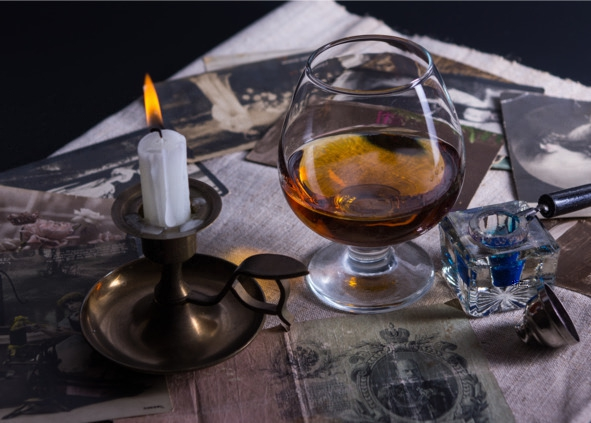
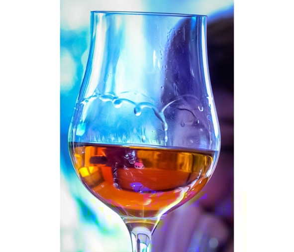

Понятие бренди
Бренди (англ. brandy от нидерл. brandewijn – «перегнанное» вино) – спиртной напиток крепостью 35—60% об., полученный путем дистилляции браги из фруктового сока (виноградного, яблочного, сливового и т. д.) или выжимок (жмыха), оставшихся после отделения сока, который пошел на другие нужды, например, на приготовление вина. Некоторые исследователи относят напитки на основе жмыха (самые знаменитые – чача и граппа) в отдельную категорию, поскольку их органолептические свойства отличаются от дистиллятов на основе чистого сока.
Самым известным видом бренди является французский коньяк (cognac), который по технологии производства является виноградным бренди. Чуть менее популярен кальвадос (calvados) – бренди из яблочного или реже грушевого сока. Названия cognac и calvados защищены по географическому принципу.
Технология производства бренди на примере коньякаПроцесс состоит из следующих этапов:
1. Выращивание винограда. Для производства коньяка разрешено использовать следующие сорта винограда: Фоль Бланш (Folle Blanch), Уньи Блан (Ugni Blanc) и Коломбар (Colombard). Но в подавляющем большинстве случаев используется Уньи Блан, из которого делают до 98% коньяков. Виноградную лозу сажают рядами на расстоянии трех метров друг от друга. Благодаря этому можно использовать для уборки урожая специальные машины, что сокращает долю ручного труда и удешевляет производство. Сбор урожая начинается в середине октября.
2. Получение сока. Весь собранный виноград сразу же отправляют под специальные прессы, которые только слегка раздавливают ягоды. На законодательном уровне запрещено использовать винтовые прессы непрерывного действия, способные выдавить ягоды насухо.
3. Брожение. Полученный на предыдущем этапе сок отправляют на брожение в емкости объемом 50—200 гектолитров. При этом строго запрещено вносить сахар. Производитель имеет право добавлять в сок только антисептики – антиоксиданты и двуокись серы. Максимальное количество этих веществ тоже регламентируется. Контроль над брожением особенно строгий, поскольку от этого процесса во многом зависит качество готового коньяка.
В результате брожения получают нефильтрованное и неосветленное сухое вино (содержание сахара менее 1 г/л) крепостью 8—9% об., которое до начала дистилляции хранят на собственном дрожжевом отстое.
4. Дистилляция. Коньячный дом обязан завершить дистилляцию до 31 марта года, следующего за годом сбора урожая. При этом выдвигаются следующие требования:
– дистилляция должна осуществляться только в границах определенной географической зоны;
– можно использовать лишь специальные медные перегонные кубы, называемые аламбиками, которые перед применением обязательно регистрируют.

Шарантский аламбик – аппарат для дистилляции коньяка
Дистилляция проводится в два этапа. Сначала вино просто перегоняют с целью отделить спирт от других примесей. Получается жидкость молочного цвета крепостью 27—32% об. На языке производителей это вещество называется brouillis (бруйи).
Целью второй дистилляции является получение чистого коньячного спирта и фракционирование летучих веществ. На данном этапе отсекается начальный выход дистиллята (так называемая «голова»), содержащая много вредных летучих веществ. Далее мастер собирает «тело» – фракцию, содержащую 69—72% спирта, которая пойдет на производство коньяка.
После того как концентрация спирта снижается до 60%, перегонку заканчивают, оставшуюся часть фракции называют «хвостом». В приготовлении коньяка она не используется, но «хвост» разрешено добавлять в следующую партию бруйи. На дистилляцию одной партии коньяка уходит примерно 24 часа. Из 10 литров молодого вина можно получить до 1 литра чистого коньячного спирта.
5. Выдержка. В производстве бочек для коньяка используется только дуб возрастом не менее 80 лет из двух регионов Франции: Лимузена и Тронсе. Процесс выдержки коньячных спиртов длится не менее 30 месяцев, а возраст самых старых напитков может достигать более 100 лет. Бочки разрешено использовать многократно.
За каждый год выдержки испаряется 0,5% спирта, мастера называют это «долей ангелов». На самом деле испарившимся спиртом питаются бактерии, живущие на стенах погребов. За 50 лет выдержки крепость коньяка снижается с 71% до 46%, но сам спирт становится более темным и ароматным.
6. Купажирование (ассамбляж). Подразумевает смешивание спиртов разной выдержки для получения готового напитка, который поступит в продажу. Если дальнейшее старение коньяка нецелесообразно, его переливают в стеклянные емкости.
7. Добавление других ингредиентов. В коньяк добавляют дистиллированную воду для регулировки крепости, сахар (максимум 3,5% от объема) для сладости, дубовую стружку и карамель, чтобы придать насыщенный темный цвет. Напиток разливают в бутылки, наклеивают этикетки, и он поступает в продажу.
История появления бренди и коньякаКроме французов на первенство в изобретении бренди претендуют также итальянцы, а само название городка Коньяк вообще происходит от имени римского наместника Коню. Согласно красивой, но неправдоподобной легенде благородный рыцарь (по совместительству – винодел и алхимик) Жак де ля Круа Марон, застав супругу с любовником, убил обоих, а затем долгое время не мог избавиться от мук совести. Однажды во сне ему явился дьявол и заявил, что намерен сварить несчастного рыцаря целых два раза, чтобы уж наверняка отделить его бессмертную душу от тела. Наутро виноградарь понял, что нужно делать. Он взял слабенькое вино, дважды прогнал через дистилляционный аппарат, отсек «голову» и «хвост» (первую и последнюю порции), получив таким образом «душу» – коньячный спирт. Рыцарь залил дистиллят в дубовый бочонок и подарил монахам. Но благочестивые братья забыли о презенте, приступив к дегустации только через несколько лет. В бочонке оказался восхитительный, ароматный и крепкий напиток.
Итальянская версияПотомки римлян утверждают, что именно они придумали технологию перегонки вина, свидетельством чему служит бочонок виноградного бренди, подаренный на свадьбу французского короля Генриха II и Екатерины Медичи еще в XVI веке.
ФактыВ портовом городе Коньяк на реке Шарант еще с XII века торговали солью и изготавливали неплохое, но слабенькое и нестойкое вино Сент-Эмийон, которое не выдерживало ни длительного хранения, ни морских транспортировок, поэтому приблизительно с XVI века его стали перегонять на винный спирт, пользуясь голландскими технологиями дистилляции. Получалось «жженое вино», которое по прибытии в точку назначения снова разбавляли до первоначальной крепости. Выходило даже дешевле – пошлины зависели от объема, а таким нехитрым способом получалось продать больше продукции с меньшими налогами.
Со временем французы улучшили перегонные аппараты и даже придумали подвергать сырье двойной перегонке. Запасы дистиллята множились, некоторые бочки залеживались, и совершенно случайно обнаружилось, что бренди после выдержки становится в разы вкуснее и мягче – так появился коньяк.
В 1778 году Франция начала экспортировать в Англию коньяк на особых условиях, по сниженным пошлинам, а с 1860-х годов выдержанный в бочках винный спирт (он же коньяк) стали разливать по бутылкам и продавать в качестве самостоятельного напитка, а не «концентрированного» вина, которое затем требуется разводить водой. На этикетке появилось имя производителя. Именно этот момент считается отправной точкой появления коньяка как отдельного алкогольного напитка. Со временем появились и другие виды бренди.
История бренди в РоссииРаспространению и развитию коньячного дела на территории Российской империи способствовали две компании: «Д. З. Сараджев» и «К. Л. Шустов с сыновьями». Давид Сараджишвили (Сараджев) получил степень доктора химии в Гейдельбергском университете, освоил курс виноделия во французском городе Монпелье. Годы учебы и жизни в Европе позволили ему получить глубокие знания для организации первого в Российской империи и Грузии коньячного производства.
В 1884 году Сараджишвили построил склад для хранения и выдержки спиртов и виноматериалов в Тифлисе, приобрел ректификационный аппарат и перегонный куб шарантского типа. Официальное открытие завода состоялось в 1888 году. В последующие годы промышленником были построены водочный завод во Владикавказе, завод по перегонке спирта в Ереване, коньячные заводы в Бессарабии, Геокчае и Баргошети. Сараджишвили принадлежали также склады для алкогольной продукции в Москве, Санкт-Петербурге, Варшаве, Одессе, Баку, Чарджоу.
Фирма Сараджева с первых лет деятельности занимала в Российской империи почти монопольное положение в коньячном производстве. Объем ее продукции составлял в 1890 году 218 900 бутылок, а в 1910 году – уже 600 тыс. бутылок. К 1911 году запасы коньяков разного возраста на центральном складе достигали 2 млн бутылок. Компания выпускала ординарные 1-, 2-, 3-, 4-звездочные коньяки и марочные коньяки «Финшампань», «Граншампань» и «ОС». Символом марки стало изображение кавказского тура, стоящего на скале.
История семьи Шустовых напоминает скорее «великую американскую мечту». Отец основателя коньячного производства был вольноотпущенным крестьянином, переехавшим в город и получившим звание купца третьей гильдии. Куда дальше шагнул его сын Николай Шустов, создавший настоящую алкогольную империю.
Торговый дом «Шустов с сыновьями» был зарегистрирован в 1863 году и имел своей целью выкурку и продажу спиртных напитков. Уже в начале двадцатого столетия компании принадлежали заводы в Москве, Ереване, Кишиневе, коньячные и ликеро-водочные склады во многих городах империи, виноградники в Кюрдамире, отделения в крупных российских городах и за рубежом. Знаменитый шустовский коньяк стал синонимом высочайшего качества и по праву занял место рядом с продуктами элитных коньячных домов Франции.
Напиток Шустова был настолько хорош, что даже получил право называться «cognac», так как на слепом тестировании сомелье не смогли отличить его на вкус от оригинальной французской продукции.
Сегодня российский виноградный бренди производят в нескольких районах, основным из которых считается Кизляр, а во времена СССР особым уважением пользовались «коньяки» из Армении, Грузии и Молдовы.
Классификация коньяков и виноградных брендиОсновным признаком всех классификаций является срок выдержки, поскольку он существенно влияет на органолептические свойства и цену напитка, дополнительно учитывают регион и сорт винограда.
Виды французских коньяковХотя в профессиональных кругах выражение «французский коньяк» звучит нелепо, так как любой коньяк производятся только во Франции, мы будем использовать этот термин, поскольку в классификации постсоветских виноградных бренди тоже присутствует слово «коньяк».
По выдержке. Маркировка разработана Национальным межпрофессиональным бюро коньяков, ее обязан наносить на этикетку каждый производитель. Вместо привычных для нас «звездочек», обозначающих время выдержки в бочке, используются латинские буквы, однако суть не меняется.
Отсчет начинается с 1 апреля следующего года после сбора винограда. Например, если урожай собран в 2012 году, возраст коньяка начнет считаться с 1 апреля 2013 года. В купажированных коньяках (смеси разных спиртов) срок выдержки определяют по самому молодому спирту в купаже.
Виды французских коньяков по выдержке:
– V.S. (Very Special), de Luxe, Selection или Trois Etoiles – минимум два года;
– Superior – не менее трех лет;
– V.S.O.P. (Very Superior Old Pale), Vieux, Reserve – четыре года;
– V.V.S.O.P. (Very-Very Superior Old Pale), Grande Reserve – пять лет;
– X.O. (Extra Old), Extra, Napoleon, Hors d’age, Tres Vieux, Vieille Reserve – минимум шесть лет.
Большинство европейских виноградных бренди тоже используют эту маркировку выдержки, а в последние несколько лет даже некоторые производители постсоветского пространства начали наносить ее вместе со «звездочками».
Согласно законодательству Франции, коньяки старше шести лет запрещено классифицировать. Считается, что их купаж и качество нельзя проконтролировать. Но у многих производителей в ассортименте есть элитные коньяки возрастом 25—60 лет. Вместо маркировки на этикетку бутылок наносят собственные имена, например, Camus Jubilee, Delamain Reserve de la Famile или Remi Martin Louis XIII.
По региону производства. Провинция Коньяк (Cognac) делится на шесть винодельческих регионов:
– Шампань (Champagne) – почва с высоким содержанием глины и мела, раньше в этой местности было море, подходит для марок среднего ценового диапазона;
– Гранд Шампань (Grande Champagne) – считается самой пригодной зоной для производства коньяка, здесь производят спирты с высоким потенциалом выдержки (минимум 20—25 лет);
– Петит Шампань (Petite Champagne) – условия немного хуже, чем в предыдущем регионе, коньяк получается плотным с устойчивыми фруктовыми тонами, спирт хранят в бочках до 15—20 лет;
– Бордери (Borderies) – местные коньяки мягкие с легким ароматом фиалок, срок выдержки около 15 лет;
– Фэн Буа (Fin Bois) – самая большая зона, напитки созревают за 3—10 лет и славятся мягким вкусом с нотками недавно отжатого винограда;
– Бон Буа (Bons Bois) – малопригодная для виноделия зона со сложным климатом, спирты этого региона идут на купаж со спиртами из других местностей;
– Буа Ординэр (Bois Ordinaires) – считается самой сложной зоной, плантации винограда расположены вдоль океанского побережья, срок выдержки около пяти лет.
Лишь некоторые виды коньяков содержат спирты одного региона, в основном это напитки из Grande Champagne, например Frapin XO. Все другие купажируют из разных зон. Отдельно стоит упомянуть о коньяках Fine Champagne (не является отдельной зоной). В эту категорию попадают напитки, сделанные на спиртах Grande Champagne и Petite Champagne, при этом часть Гранд Шампани должна быть не менее 50%.
По сорту винограда. Основным сортом для производства коньяка является Уньи Блан (Ugni Blanc). Ему свойственна высокая кислотность, хорошая урожайность и устойчивость к заболеваниям. В меньшей степени используется виноград сортов Фоль Бланш (Folle Blanch) и Коломбар (Colombard). Из них получаются более ароматные спирты, но сложность в выращивании нивелирует преимущества.
Классификация советских коньяков (виноградных бренди)Продолжает действовать на территории постсоветского пространства.
По классу. Определяют категорию напитка – «статусность». Выделяют следующие виды по качеству:
– ординарные – самые дешевые марки выдержкой 3—5 лет;
– марочные – коньяки из хороших спиртов не менее шести лет выдержки;
– коллекционные – элитные напитки возрастом более 23 лет, обычно покупаются для частных коллекций.
По времени выдержки. Ординарные коньяки маркируют звездочками:
– 3 звезды – указывает на коньяк светло-соломенного цвета, выдержкой минимум 3 года и крепостью 40% об.;
– 4 звезды – сорта коньяка из спиртов минимум четырех лет выдержки, крепостью от 41% об. и сахаристостью, не превышающей 1,5%, цвет более темный;
– 5 звезд – напитки, произведенные из высококачественных коньячных спиртов выдержкой в бочках от пяти лет, крепостью не менее 42% об. и максимальной сахаристостью 1,5%.
В отличие от французской классификации, по российскому ГОСТ Р 51618—2009 коньяков с выдержкой менее трех лет не бывает.
На этикетках марочных коньяков можно встретить надписи:
– КВ (коньяк выдержанный) – возраст 6—7 лет, крепость не меньше 42% об.;
– КВВК (коньяк выдержанный высшего качества) – 8—10 лет выдержки, крепость 43—45% об.;
– КС (коньяк старый) – минимум 10 лет настаивания в бочке, 40—57% об.;
– ОС (очень старый) – возраст не менее 20 лет, крепость 40—57% об.
Классификация коллекционных коньяков не предусмотрена.
Бокалы для коньякаЧтобы уловить все оттенки аромата и сполна насладиться вкусом, для дегустации коньяка используют специальные бокалы, которые бывают двух основных видов:
Snifter («снифтер»). Классический бокал для коньяка, он же brandy glass («бренди глас») и cognac balloon (коньяк баллон»). Это кругленький, сужающийся кверху, на коротенькой ножке сосуд, из которого принято дегустировать виноградные бренди категории X.O. (Extra Old, минимум 6 лет выдержки). Само слово snifter происходит от английского sniff – «нюхать». Чем уже верхняя часть снифтера, тем сильнее концентрация букета. Объем этих бокалов варьируется от 70 до 700 мл, хотя встречаются и более вместительные авторские или сувенирные модели. Есть негласное правило: чем старше напиток, тем больше по объему должен быть бокал, чтобы аромат как следует «погулял», но не улетучился. Каноничные снифтеры изготавливают из тонкого стекла или хрусталя.

Снифтер
Tulip glass («тюльпан»). Представляет собой тонкий бокал на высокой ножке, формой напоминает раскрывающийся бутон. Такой сосуд подходит для молодых напитков: у невыдержанного коньяка достаточно резкий, «бьющий в нос», аромат, поэтому лучше дать запаху немного разойтись, стать нежнее.

«Тюльпан»
Любопытно, что именно тюльпаны, а не снифтеры, очень распространены во Франции – на родине коньяка.
Ценителям коньяка желательно иметь в домашнем баре как снифтеры, так и «тюльпаны». Первые хороши для неторопливых бесед у камина с бокальчиком выдержанного коньяка, вторые – для веселого застолья и дегустации нескольких напитков. Если вышло так, что в доме нет снифтеров и «тюльпанов», можно воспользоваться стаканами для виски с толстым дном: «олд фэшн» или «рокс».
Как пить коньякПравильная дегустация коньяка состоит из трех фаз: «глаз», «нос» и «рот». Сначала оценивают внешний вид, запах и только потом вкус. Коньячный бокал (в зависимости от выдержки напитка «снифтер» или «тюльпан») должен быть прозрачным, чистым и абсолютно сухим. Бокал наполняют коньяком не более чем на треть, стандарт – на четверть объема. Идеальная температура подачи коньяка – 20—25° C.
На фазе «глаз» разбирают оттенок. Цвет зависит от выдержки и наличия (отсутствия) карамели в составе. Коньяк может иметь разные оттенки: светло-золотистый, красноватый с бронзовым или медным отливом, темно-янтарный и даже коричневый. Из-за карамели только по цвету определить возраст коньяка невозможно. Если напиток с маркировкой V.S. или V.S.O.P. (выдержка 2—4 года) имеет очень темный цвет – в него однозначно добавляли карамель. За несколько лет выдержки в дубовых бочках коньяк сильно не темнеет. Качественным можно назвать идеально прозрачный маслянистый напиток, имеющий живой блеск. Потеки на бокале с хорошим коньяком должны быть ровными и рельефными. На этом визуальная дегустация коньяка заканчивается.
Во время следующей фазы оценки («нос») специалист использует возможности своего обоняния. Некоторые профессионалы вовсе не оценивают коньяк визуально, считая, что цвет и консистенцию легко подделать, а сразу переходят к анализу запаха. Фаза «первый нос» – коньяк не взбалтывают, а сразу подносят к носу на расстояние 10—15 см, пытаясь уловить первые летучие вещества.
«Второй нос» – бокал несколько секунд крутят в руках, затем пару раз наклоняют его в разные стороны. После этого напиток подносят ближе к носу, оценивая ароматический букет. Очень хорошо если коньяк пахнет ванилью, медом, шоколадом, пряностями или кокосовым орехом. Коньяк выдержкой более 15 лет должен иметь запах грибов, сыра, сливочного масла, перезрелых фруктов, миндаля и лесных орехов. Этот аромат называется rancio («рансьо») и присущ только элитным выдержанным коньякам, а также некоторым маркам крепленых вин.
На фазе дегустации «третий нос» оценивают совмещение всех ароматов напитка. Не нужно подносить нос слишком близко к бокалу, поскольку есть риск обжечь слизистую оболочку. Ожог неопасен, но на некоторое время дегустатор теряет обоняние и не сможет довести дегустацию до конца. Чтобы снять раздражение носоглотки от коньячного спирта, достаточно понюхать тыльную сторону ладони.
Заключительная фаза дегустации называется «рот». Коньяк пьют маленькими глотками, на несколько секунд задерживая во рту. Благодаря этому хорошо улавливается эффект, называемый «хвостом павлина» – коньяк медленно растекается по языку и глотке, оставляя приятное послевкусие, в котором не должно быть резких спиртовых тонов. Чем больше длится послевкусие, тем качественнее напиток. Еще можно 1—2 минуты погреть бокал теплом ладони, а потом сделать глоток. Вкус немного изменится. Чем качественнее коньяк, тем дольше длится послевкусие.
Правильная закуска к коньякуУниверсальным для коньяков является французское правило трех «С» (Cafe, Cognac, Cigare), согласно которому вместе с коньяком подают лишь сигары и кофе. Сначала участники дегустации выпивают по чашечке кофе, затем переходят к коньяку, а после 30—50 мл напитка джентльмены выкуривают по сигаре. Последовательность действий повторяют желаемое количество раз, сопровождая дружеской беседой. Другая закуска не предусмотрена.
Недостаток правила трех «С»: сильно не опьянев, можно выпить не больше 100—150 мл коньяка. Для русского человека это смешная доза, а отсутствие закуски не вписывается в нашу культуру пития, так что закуска нужна обязательно. При этом важно сохранить вкус коньяка, значит, блюда не должны быть острыми и жирными.
Легкие закуски будут кстати во время фуршета или при дегустации дорогого напитка. В таких случаях можно ограничиться мясными нарезками, например, ветчиной или нежирной колбасой, бутербродами с красной рыбой или икрой, качественными сортами сыра и овощами: сладким болгарским перцем, помидорами, оливками. На десерт к коньякам подают фрукты (белые сорта винограда, яблоки, груши, бананы), несоленый арахис, грецкие орехи, мороженое и горький шоколад.
Сытные закуски подойдут для длительного застолья. Коньяк закусывают горячими мясными блюдами, салатами без майонеза, вареным и жареным картофелем. Нелишним будет поставить на стол мясную и сырную нарезку. Главное – избегать рыбных блюд (кроме креветок и омаров), поскольку из-за специфического запаха они не сочетаются с коньяком.
Коньяк с шоколадом и лимономЗападным ценителям алкоголя, привыкшим к элитным бренди, наша привычка закусывать коньяк лимоном и шоколадом кажется дикостью, потому что кислота лимона и сладость шоколада перебивают вкус любого коньяка. Однако все не так просто.
Качество большинства дешевых бренди постсоветского пространства оставляет желать лучшего, а лимон с шоколадом как раз и нужны, чтобы нивелировать резкий запах и жгучий вкус спирта. Примерно с такой же целью американцы добавляют в бокал со своим бурбоном лед.
Закусывать шоколадом и лимоном целесообразно только дешевые бренди с яркими спиртовыми тонами, во всех других случаях это бессмысленная трата денег на хороший коньяк.
У любителей подобных сочетаний есть даже своя методика: вначале положить под язык ломтик шоколада, дождаться, пока он начнет таять, сделать глоток коньяка, закусить долькой лимона без сахара. Последовательность действий повторить желаемое количество раз. Еще одна оригинальная закуска: между двумя ломтиками сыра положить тонкий ломтик лимона, получится «гусарский бутерброд».
Коньяк с другими напиткамиЧай и кофе. Кофе является единственным напитком, сочетание которого с коньяком признают даже приверженцы традиционной коньячной культуры. Во время обычного застолья можно запивать коньяк холодным кофе, но сильно увлекаться нельзя, особенно если есть проблемы со здоровьем. Кофеин в сочетании с алкоголем создает нагрузку на сердце. Чай с коньяком обычно пьют только для согрева, от бессонницы или головной боли.
Минеральная вода. Коньяк запивают глотком негазированной минеральной воды, только чтобы «освежить» рецепторы языка при одновременной дегустации нескольких напитков. Смешивать напитки в одном бокале не принято, так как после разбавления водой коньяк становится мутным и полностью теряет вкус. Тот же эффект получается при сочетании с содовой или тоником.
Фруктовые соки. На первый взгляд кажется бессмысленным разбавлять коньяк соками, портя уникальный вкус, который формировался в бочке годами. Но после того как Морис Ришар Хеннесси (владелец одноименной марки) признался, что любит смешивать коньяк с апельсиновым соком, в среде ценителей разбавление перестало считаться чем-то запретным, начались эксперименты.
По мнению Ришара Хеннесси, хороший коньяк такая субстанция, которую нельзя испортить в принципе, а добавление сока только делает напиток не таким крепким и привносит во вкус новые нотки. Сразу после признания скептики обвинили мистера Хеннесси в желании расширить рынок сбыта коньяка любыми средствами, невзирая на коньячную культуру, поскольку слабоалкогольные напитки больше нравятся женщинам и молодежи. Споры не утихают до сих пор.
Коньяк разбавляют апельсиновым, вишневым, яблочным, лимонным, гранатовым или виноградным соком в пропорции 1:3 или 1:4 (одна часть коньяка к 3—4 частям выбранного сока). Готовый микс лучше подавать в высоком бокале (хайболе), наполненном льдом. Получается в меру крепкий лонгдринк – коктейль большого объема (140—400 мл), одну порцию которого можно пить весь вечер. Естественно, вкус коньяка почти не чувствуется.
Популярные коктейли с коньяком Sidecar («Сайдкар»)Согласно самой правдоподобной версии, коктейль придумал бармен парижского отеля «Ритц» специально для своего постояльца – офицера, принимавшего участие в Первой мировой войне. Бравый вояка приезжал с водителем, сидя в мотоциклетной коляске, отсюда и название. По другой версии, примерно в то же время рецепт изобрел лондонский бармен Пэт МакГарри, работавший в Bucks Club. А название появилось благодаря специальной емкости для сливания остатков коктейлей, которая на барменском жаргоне именуется sidecar. В наше время «Сайдкар» считается одним из лучших коктейлей с коньяком для мужчин.
Состав:
– коньяк – 50 мл;
– апельсиновый ликер «Куантро» или «Трипл Сек» – 20 мл;
– лимонный сок – 20 мл;
– сахар – 10 г (не обязательно);
– лед в кубиках – 100 г.
Рецепт: сделать на бокале сахарную каемку, смочив края в лимонном соке и окунув их в сахар (по желанию), с кромкой коктейль становится слаще. Смешать в шейкере коньяк, ликер, сок и лед. Готовый коктейль перелить через стрейнер (барное ситечко) в бокал.
Brandy Alexander («Бренди Александр»)Коктейль «Бренди Александр» появился в 20-е годы в Америке во времена «сухого закона». Напиток подавали в известном подпольном баре, куда захаживали высшие члены общества. Одним из постоянных посетителей был литературный критик Александр Вутток, предположительно в честь которого и назван коктейль. Первое письменное упоминание рецепта появилась в 1922 году в книге Гарри МакКелхона «ABC Cocktails». Джон Леннон увлекся этим коктейлем во время «потерянного уик-энда» с Йоко Оно в 73—74 гг.
Состав:
– коньяк (бренди) – 30 мл;
– ликер Creme de Cacao – 30 мл;
– сливки (жирность 20%) – 30 мл;
– лед в кубиках – 200 г;
– мускатный орех – 1 щепотка (для украшения).
Рецепт: шейкер наполнить льдом на 2/3. Добавить коньяк, ликер и сливки. Интенсивно смешивать, пока шейкер не обмерзнет. Перелить смесь через стрейнер (барное ситечко) в предварительно охлажденный бокал. Сверху посыпать мускатным орехом для украшения. Можно пить через трубочку.
«Шоколадный коньяк»Коктейль неизвестного русского автора, в котором отразилась традиция пить коньяк с лимоном и шоколадом.
Состав:
– коньяк – 50 мл;
– шоколадный ликер (или холодный жидкий шоколад) – 20 мл;
– лимонный сок – 5 мл;
– лед в кубиках.
Рецепт: смешать в шейкере все ингредиенты, затем перелить коктейль в широкий бокал.
Cognac and cola («Коньяк с колой»)Коктейль молодежных вечеринок, приводящий в ужас ценителей традиционной коньячной культуры.
Состав:
– коньяк – 50 мл;
– кола – 50 мл.
Рецепт: налить в бокал коньяк, затем очень холодную колу, аккуратно перемешать.
Cognac and Martini («Коньячный Мартини»)Благодаря умеренной крепости и сладкому вкусу считается женским коктейлем.
Состав:
– коньяк – 20 мл;
– мартини «Бьянко» – 25 мл;
– сок манго, грейпфрута или персика – 20 мл.
Рецепт: смешать в шейкере все ингредиенты вместе с несколькими кубиками льда, перелить в бокал для мартини, сверху украсить маслиной.
Известные марки коньяка Hennessy («Хеннесси»)Hennessy – легендарный коньячный дом, на долю которого приходится 45% всех мировых продаж и 66% рынка США. Ежегодно «Хеннесси» производит более 50 млн бутылок коньяка и экспортирует продукцию в 120 стран. Датой создания компании считается 1765 год, когда вышедший в отставку капитан Ричард Хеннесси (ирландец по происхождению) поселился в городе Коньяк, чтобы заняться производством одноименного напитка. Первая партия была экспортирована в Ирландию и Британию, следующая отправилась в Америку и французские колонии. К 1792 году объемы продаж составили около 3 млн бутылок.
Заказчиками Hennessy стали европейские королевские дома, затем к ним присоединился российский императорский двор. В XIX столетии выдающееся качество коньяка сделало марку популярной на всех континентах. После смерти Ричарда Хеннесси его сын Жак возглавил фирму, сменив название на Jas Hennessy. С того времени и до нынешних дней президентское кресло занимали исключительно представители восьми поколений семьи.
Именно коньячный дом «Хеннесси» ввел в обиход многие понятия и термины, позднее принятые всеми производителями отрасли. В 1817 году в соответствии с пожеланиями будущего британского монарха Георга IV был создан очень выдержанный коньяк светлого оттенка (Very Superior Old Pale). Аббревиатура V.S.O.P. стала использоваться в качестве официального стандарта марки. Позднее «Хеннесси» впервые в городе начал разливать коньяк в бутылки, ему же принадлежит заслуга изобретения системы звездочек для обозначения качества напитка.
Remy Martin («Реми Мартан»)Remy Martin входит в так называемую «большую четверку» старейших коньячных домов Франции и занимает второе место по объему продаж в мире. Компания экспортирует продукцию в более чем 160 стран: главные направления – Великобритания, Канада, Германия и перспективные азиатские рынки. Марка названа в честь основателя Реми Мартана, родившегося в 1695 году в небольшом городке Руайаке во Франции. Отец Реми был виноградарем и виноделом, он привил сыну трепетное отношение к лозе. Женившись в 19 лет, Мартан рано стал самостоятельным и в 1724 году основал собственное дело по производству коньяка.
Сумев оценить значение резервирования (длительной выдержки) коньяков на годы вперед, Мартан создал надежный фундамент будущего успеха компании. На каждую проданную бутылку приходилось восемь бутылок еще зреющего в хранилищах коньяка. Продукция коньячного дома отличалась настолько высоким качеством, что ему удалось в обход существовавших ограничений получить исключительное право на посадку новых виноградников. После Реми семейный бизнес унаследовал сын, но вскоре передал управление в руки внука. Между 1810 и началом 1820-х гг. торговый оборот фирмы в регионе Коньяк вырос с 530 тыс. галлонов до 2,7 млн.
Martell («Мартель»)Martell ведет отсчет своего существования с 1715 года и считается самым старым среди «большой четверки» коньячных домов. Репутация «Мартеля» как во Франции, так и за пределами страны основана на богатейшем наследии, а также накопленном опыте и креативном подходе. Продукция компании экспортируется в более чем 100 стран мира.
Слово martelle дословно переводится с французского как «молоток», и это нашло отражение в гербе компании – на геральдическом щите изображены три молотка и год основания. Этикетки Martell украшает летящая ласточка – по легенде именно эта птица привела молодого Жана Мартеля в город Коньяк, где он и создал собственное дело. Спустя шесть лет завод уже поставил более 200 тыс. литров коньяка – сначала на историческую родину основателя бренда, в Британию, а затем и в другие европейские страны.
Courvoisier («Курвуазье»)Courvoisier входит в число четырех ведущих коньячных домов Франции. Продукция бренда широко известна на всех континентах, особенно ценится гурманами Англии и Азии, где выпускаемый брендом коньяк «Наполеон» считается символом постоянства и безупречного качества. Истоки возникновения компании относятся к первому десятилетию XIX века, когда Эммануэль Курвуазье и Жюль Галуа открыли виноторговый магазин на северной окраине Парижа. В 1828 году их сыновья, унаследовавшие семейный бизнес, переехали в Жарнак. В построенном замке недалеко от реки Шаранты обосновалась штаб-квартира нового коньячного дома.
Согласно легенде, когда Наполеон Бонапарт отправлялся в ссылку, ему было позволено взять с собой несколько бочек коньяка «Курвуазье». Сопровождавшие опального императора офицеры британской армии нашли вкус напитка очень изысканным и стали называть его «коньяком Наполеона». Впоследствии из этого факта компания извлекла безусловную коммерческую пользу: с 1909 года до сегодняшнего дня на каждой бутылочной этикетке красуется силуэт Бонапарта. В 1869 году Courvoisier стал официальным поставщиком императорского двора Франции. Для августейших особ, знаменитых деятелей культуры и науки, прибывших на торжество в честь открытия Эйфелевой башни в 1889 году, подавался исключительно коньяк «Курвуазье». На проходившей в эти дни Всемирной выставке компания была удостоена Большой золотой медали.
Camus («Камю»)Camus является пятым коньячным домом в Коньяке по объему продаж и самым крупным из числа независимых семейных предприятий. В представительствах компании по всему миру работают более 500 человек. Дом Camus имеет филиалы в Китае и США, а также офисы в России, Вьетнаме и Гонконге. Коньячный дом основан Жаном-Батистом Камю в 1863 году. Вначале фирма продавала свой коньяк другим торговым домам, но позднее амбициозный предприниматель выкупил доли партнеров и дал дому свое имя – Camus-La Grande Marque. С тех пор на протяжении полутора столетий пять поколений семейства владеют маркой.
В 1910 году дом Camus получил статус официального поставщика двора последнего российского императора Николая II – по данным того времени, на долю Камю приходилось более 70% импортированных в страну коньяков. В 1959 году представитель третьего поколения, Мишель Камю, заключил договор о поставках с советским правительством, который действовал на протяжении 30 лет, даже в эпоху тотальных антиалкогольных компаний. Благодаря этому в СССР продукция бренда стала символизировать само понятие «французский коньяк».
Арманьяк – еще один французский виноградный брендиФранцузы считают, что миру они подарили коньяк, а себе оставили арманьяк и не прогадали. Эти два спиртных напитка очень похожи, но не идентичны.
Арманьяк (фр. armagnac) – вид виноградного бренди, получаемый путем однократной дистилляции вина из белого винограда сортов Уньи Блан, Фоль Бланш, Коломбар, Бако Блан в одноименном французском регионе Armagnac, который находится в провинции Гасконь. Выделяют семь вкусовых оттенков арманьяка: перец, чернослив, ваниль, персик, фиалка, липа и лесной орех. Название Armagnac защищено по региональному принципу, напиток производят в трех аппелласьонах: Le Bas-Armagnac, L’Armagnac-Tenareze и Le Haute-Armagnac.
Виды арманьяка:
– Vieil («старый») – выдержка более 6 лет;
– Vintage («марочный) – созданный из одного спирта без купажа;
– Blanche («белый») – не подвергался выдержке в бочках.
Как пить арманьякВыдержанный – только в чистом виде. Из-за неустойчивости ароматического букета его нельзя разбавлять и смешивать с другими напитками. Арманьяк наливают в обычный снифтер или тюльпановидный коньячный бокал, затем нагревают теплом рук. Немного подогретый арманьяк раскрывает ароматический букет и неповторимый вкусовой оттенок. Пьют арманьяк небольшими глотками без закуски. Это мужской дижестив, который хорошо сочетается с сигарами.
Белый (невыдержанный) арманьяк можно закусывать копченым лососем, фуа-гра, мясом по-гасконски и фламбе.
Отличия арманьяка от коньяка– Разная местность и зачастую сорта винограда.
– Метод дистилляции (арманьяк – однократная или непрерывная дистилляция, коньяк – двойная перегонка).
– Крепость (коньяк содержит 40% об., арманьяк – от 40% до 50% об.).
– Арманьяк делают из винограда урожая одного года (миллезимный напиток), коньяк – в большинстве случаев из сортов винограда, выращенных в разные годы (купажированный напиток).
– Коньяк и арманьяк выдерживают в бочках из разных пород дуба, срок выдержки арманьяка обычно больше.
– Даже при одинаковой выдержке арманьяк обычно дороже коньяка.
Хересный бренди – испанский ответ коньякуХересный бренди (исп. Brandy de Jerez) – алкогольный напиток крепостью 36—45% об., производимый из винных дистиллятов в Андалусии (Испания). Английское название – sherry brandy (шерри бренди). Отличительная особенность хересных бренди – выдержка дистиллята по специальной системе «Солера и криадера» (Criadera and solera system) в бочках из-под хереса – крепленого вина из белого винограда, отсюда и название.
Испанские бренди изготавливают только в одном регионе – «Хересном треугольнике», расположенном в Андалусии между городами Херес-де-ла-Фронтера, Санлукар-де-Баррамеда и Эль-Пуэрто-де-Санта-Мария. Когда-то эта местность была населена маврами, которым религия запрещала пить вино. Они и придумали перегонять перебродивший сок в винный спирт, чтобы использовать полученный дистиллят в медицинских целях. Сложно сказать, кому и когда пришла в голову идея выдерживать винный спирт в бочках, однако достоверно известно, что как минимум в 1580 году производство бренди было так развито, что правительство ввело на него дополнительный налог. В XVIII – XIX веках изготовление выдержанного винного дистиллята приняло коммерческий характер: бренди экспортировали в страны Западной и Северной Европы, главным образом в Нидерланды. Так появилось второе название высококачественного хересного бренди – оландас (holandas).
Brandy de Jerez – название, защищенное по происхождению. Чтобы принадлежать к этой категории, напиток должен соответствовать трем требованиям:
– изготавливаться исключительно в регионе Херес;
– выдерживаться в бочках из-под хереса, изготовленных из американского дуба;
– проходить выдержку по системе «Солера».
Вкус хересного бренди во многом определятся не столько технологией производства и сроком выдержки, сколько бочкой и видом содержавшегося в ней ранее хереса. Наиболее распространенные сорта: Pedro Ximenez («Педро Хименес»), Manzanilla («Мансанилья»), Fino («Фино»), Oloroso («Олоросо»).
Особенности производстваКак и любой бренди, испанский вариант получают методом дистилляции вина, в этой стране – из сортов винограда Паломино (Palomino) и Айрен (Airen). Для перегонки используют либо колонны непрерывного цикла, либо медные аламбики, растапливаемые каменным дубом. В первом случае получается недорогой продукт без особенного букета крепостью до 95% об., называемый просто дистиллятом. Во втором – ароматный 40-70-градусный спиртной напиток holandas (оландас). Двойная дистилляция хересного бренди практикуется очень редко, поскольку местные мастера считают, что при каждой последующей перегонке напиток теряет глубину букета и аромат. Это одно из отличий испанских бренди от коньяков, которые всегда перегоняют дважды. Полуготовый бренди подвергают выдержке по системе «Солера и криадера» – выдержанный спирт периодически смешивают с порциями более молодого.
Виды хересного брендиХересный бренди классифицируют по выдержке в бочках и содержанию летучих веществ (чем выше концентрация, тем насыщеннее аромат):
– Solera (Солера) – выдержка от полугода, содержание летучих веществ не менее 2 г/л. Нередко напитки этой группы представляют собой купаж дистиллята и оландаса в пропорции 50:50.
– Solera Reserva (Солера Резерва) – выдержка от трех лет, содержание летучих веществ от 2,5 г/л. Состав: 75% оландаса и 25% дистиллята.
– Gran Reserva (Гран Резерва) – проводит в бочках 8—10 лет, содержание летучих веществ от 3 г/л, для этого сорта годится только чистый оландас из аламбика.
Как пить хересный брендиНапиток подают в снифтерах или тюльпановидных бокалах. Закусывают мясными блюдами, как жирными, так и диетическими. Также неплохой гастрономической парой считаются овощи гриль. Запивают хересный бренди крепким заварным кофе.
Известные марки: Capa Negra («Капа Негра»), Carlos I («Карлос I»), Veterano («Ветерано»), Don Pelayo («Дон Пелайо»).
Метакса – греческая смесь бренди и винаСоздавая небольшое семейное предприятие по производству метаксы, Спирос Метаксас даже не представлял, что спустя несколько десятилетий придуманное им спиртное станет визитной карточкой Греции и войдет в топ-100 самых известных алкогольных напитков мира. Теперь его поставляют в более чем 120 стран.
Метакса? (греч. ??????, англ. metaxa) – греческий алкогольный напиток темно-золотистого цвета крепостью 38% об., получаемый путем смешивания выдержанного виноградного бренди со сладким мускатным вином и травяным настоем, секрет которого хранится производителем в тайне. Метакса обладает ароматом сухофруктов и муската. Во вкусе присутствуют нотки дуба и ванили. Слово metaxi с греческого языка переводится как «шелк».
Метаксу делают из винного спирта двойной перегонки. Используется виноматериал из трех регионов Греции: Коринфа, Крита и Аттики. После перегонки спирт выдерживают в дубовых бочках 3—15 лет (элитные виды метаксы – до 80 лет). Далее полученное бренди смешивают с мускатным вином 12 месяцев выдержки, произведенным на островах Самос и Лемнос. Затем добавляют оригинальный травяной настой и лепестки роз. На заключительном этапе готовую метаксу выдерживают в дубовых бочках при температуре -6° C не менее 6 месяцев. После фильтрации и разлива в бутылки напиток поступает в продажу.
Производство метаксы началось в 1888 году в городе Пирей. В качестве эмблемы выбрана древнегреческая монета, посвященная победе греков над персами в морском сражении возле города Саламин. Это монету нашли во время земляных работ при строительстве завода. Почти сразу после начала производства метаксу преподнесли королевским домам Греции, Сербии, России и Эфиопии. Благородные особы высоко оценили новое спиртное, сделав компанию Спироса Метаксаса своим официальным поставщиком. С тех пор в Европе метаксу называют «греческим шелком».
ВидыМетаксу классифицируют по сроку выдержки дистиллята в дубовых бочках:
– Metaxa 3 stars – минимум 3 года выдержки;
– Metaxa 5 stars – минимум 5 лет выдержки;
– Metaxa 7 stars – минимум 7 лет выдержки;
– Metaxa Grand Olympian Reserve – 12 лет выдержки;
– Metaxa Grand Fine – продается в керамическом кувшине, выдержка от 8 до 15 лет;
– Metaxa Private Reserve – поставляется в хрустальном графине, выдержка от 20 до 30 лет;
– Metaxa AEN – бренди выдержкой от 30 до 80 лет.
Как пить метаксуМетаксу пьют при комнатной температуре небольшими глотками из ликерных рюмок. Именно этот способ позволяет сполна насладиться вкусом и ароматом напитка. Уже после первого глотка приятное тепло разносится по всему телу, с каждым последующим глотком оно усиливается. Некоторые ценители предпочитают пить метаксу выдержки 3—5 лет со льдом, но тогда аромат теряется. В качестве закуски можно подавать цитрусовые (лимоны, апельсины), виноград, бутерброды с икрой, молочный шоколад, листья свежего салата, сыры и даже запеченное мясо.
Метаксу разбавляют тоником и цитрусовыми соками в пропорции 1:1. Также этот бренди по 10—25 мл добавляют в чай и кофе. В Греции чай с метаксой считается лечебным.
Бренди стран постсоветского пространства Арбун – армянский брендиЧтобы избежать правовых проблем, в 2010 году правительство Армении ввело для виноградных бренди, произведенных на территории страны, название «Арбун (Arbun)», которое дословно переводится на русский как «опьянеть». Однако на постсоветском пространстве термин еще не прижился, и по старинке все бренди называют «армянскими коньяками».
Археологические находки свидетельствуют, что традиции армянского виноделия зародились более 3000 лет назад, однако первый коньячный завод появился в стране только в 1887 году. Производство принадлежало купцу Нересу Таиряну, хорошо знакомому с французскими технологиями дистилляции. Через 12 лет предприятие выкупила российская компания «Шустов и сыновья». Господин Шустов не жалел ни сил, ни инвестиций, и к началу Первой мировой войны в Армении было уже 15 коньячных заводов.
В качестве сырья использовался местный виноград из Араратской долины, однако управляющий предприятия получил образование во Франции, оттуда же было завезено оборудование и даже бочки для выдержки. Успеху местного бренди не помешала даже национализация завода после Октябрьской революции. В СССР «армянские коньяки» ценились выше аналогичных напитков из других республик.
Единый стандарт производства арбуна утвержден в 1999 году, и одно из основных требований – бренди должен быть изготовлен из местных сортов винограда. Кроме того, крепость не может быть ниже 40% об., а для производства годятся только чуть недозрелые ягоды с сахаристостью не выше 20%.
Из собранного винограда делают вино, которое дистиллируют в перегонном кубе шарантского типа (аламбике), колонны непрерывного действия не используются. Виноградный спирт выдерживают в дубовых бочках не менее трех лет, причем первые полгода будущий напиток вызревает в новой бочке, чтобы лучше впитать аромат дуба, и только затем его переливают в старую. Производители не поддерживают в помещении особенный температурный режим, но естественный климат Армении (жаркое лето и холодная зима) способствует сильному перепаду температур в течение года и обеспечивает бренди характерный мягкий вкус.
После выдержки спирты смешивают (у каждого производителя свои секретные пропорции), разбавляют родниковой водой до 40% об. и слегка подкрашивают жженой патокой, чтобы напиток приобрел благородный каштаново-янтарный цвет. Затем купаж снова выдерживают в дубовой бочке, в этот раз от трех месяцев до полутора лет, чтобы «сгладить швы» между разными спиртами и получить сбалансированный напиток. Наконец, на последней стадии арбун проходит двойную фильтрацию и его разливают в бутылки.
В зависимости от срока выдержки армянские бренди бывают:
– ординарные (выдержка 3—5 лет, точный возраст определяется количеством звездочек на этикетке);
– марочные (выдержка от шести лет);
– коллекционные (марочные, но дополнительно выдержанные не менее трех лет).
Известные марки: «Арарат», «Наири», «Айк», «Саят Нова», «Страна камней».
Дивин – молдавский брендиВ случае с Молдовой бренди – не главный, а сопутствующий продукт виноделия. Чтобы не нарушать международное торговое законодательство, правительство решило маркировать все виноградные бренди, произведенные в стране, надписью «дивин» (divin).
В начале XX века Молдова обладала обширными виноградниками и активно поставляла на российский рынок красное и белое вино, тогда же в винокурнях Кишинева и Калараша начали изготавливать крепкое спиртное. После революции производство не остановилось, тем более что в 1978 году министерство пищевой промышленности выпустило декрет, предписывающий всем советским республикам наладить выпуск локальных «коньяков». Для Молдовы такой показательной продукцией стала марка «Белый аист».
Изображение летящей птицы с гроздью винограда украшало местные вина и бренди еще с середины 50-х годов XX века. Само словосочетание «Белый аист» уже отождествлялось у потребителей с местом происхождения напитка и его высоким качеством. Первая партия «Белого аиста» выпущена Бельцким винно-коньячным комбинатом в 1978 году, годом позже началось промышленное производство. Разработанная технологическая документация была также передана трем предприятиям в Кишиневе, Тирасполе и Кэлэраше. Вскоре коньяк стал самой доходной торговой маркой республики и начал поставляться на экспорт.
После распада Советского Союза и наступившего хаоса на рынке алкоголя популярность напитка сыграла недобрую роль: между производителями начались споры за торговую марку, росло количество случаев контрафакта и нелояльной конкуренции. Поддельных «аистов» изготавливали не только подпольные цеха, но и вполне легально работающие предприятия в Болгарии, Украине, Латвии, Казахстане. В 1995 году Бельцкий комбинат первым подал заявку на закрепление за ним этого торгового знака и получил эксклюзивные права на производство, с чем категорически не согласились другие предприятия.
В 2000 году эти права были аннулированы, и квоту на выпуск получили Кэлэрашский винный завод, завод KVINT, АО «Арома» и «Винэрия-Бардар». С 2001 года начался отсчет нового периода в истории бренда: права на марку, объявленную национальным достоянием, перешли к государству, управление доверено агентству Moldova-Vin. На базе Бельцкого комбината основано АО Barza Alba («Белый аист»), которое по-прежнему производит знаменитый коньяк.
Бренди изготавливают по французской технологии. После двойной дистилляции в медных кубах виноградные спирты стареют в дубовых бочках 3—50 лет. Затем их купажируют, нередко добавляют сахар (особенности советской технологии) и карамель, чтобы придать напитку благородный янтарный цвет и смягчить вкус. Готовый купаж выдерживают в бочке еще минимум год, чтобы спирты «поженились» – смешались в сбалансированный букет. В качестве сырья используют виноград с местных виноградников: Алиготе, Рислинг, Коломбар, Уньи Блан и т. д.
Молдова использует следующую маркировку бренди:
– 3—5 звезд – время выдержки в годах;
– DVM – выдержка от шести лет;
– DVS – выдержка от восьми лет;
– DVV – выдержка от 10 лет;
– DVFV – выдержка от 20 лет.
Чтобы получить определенную категорию, дивин должен содержать не менее 75% спиртов соответствующей выдержки, остальные 25% купажа могут принадлежать к предыдущему пункту (если речь идет о коньяке DVV 10-летней выдержки, 25% спиртов могут быть DVS возрастом «только» восемь лет, и т. д.).
Известные марки: «Белый аист», «Дойна», «Букет Молдавии».
Грузинские брендиВ Грузии издавна культивировался виноград, страна известна древними традициями виноделия. Первым местным промышленником, наладившим коньячное производство, был Георгий Болквадзе. Первым – но не лучшим. Его продукция увидела свет в 1865 году, но так и не вышла на международный рынок, поскольку не могла конкурировать с французскими аналогами.
Дальнейшая история развития коньячного дела в Грузии неразрывно связана с Давидом Сараджишвили. В 1884 году он основал в Тбилиси винзавод, который тремя годами позднее выпустил первую порцию бренди. Производитель четко следовал французской технологии, а также лично работал над повышением качества продукта, подбирал зоны для виноградников, принимая во внимание сочетание почвы и местного климата.
Молодой энолог Сараджишвили успешно развивал бизнес, и вскоре коньячные заводы появились не только в столице Грузии, но и в других городах Российской империи. В 1909 году процесс производства виноградного бренди был систематизирован и кодифицирован, специальный «Закон о коньяке» определял сорта винограда, из которых должен был изготавливаться напиток, четко прописывал все правила.
Во время встречи «Большой Тройки» в Ялте в 1945 году продукцию Тбилисского коньячного завода (правопреемника компании Сараджишвили после его смерти) по достоинству оценили Сталин и Рузвельт, а знаток и ценитель спиртных напитков Черчилль даже поначалу не распознал грузинскую «подделку», приняв ее за настоящий французский коньяк. Исторический анекдот гласит, будто четырьмя годами позже Черчилль праздновал 75-летний юбилей и получил в подарок от Сталина 75 бутылок превосходного грузинского коньяка. Говорят, будто британский премьер воскликнул: «Жаль, что мне исполняется не сто!»
Производство в Тбилиси функционирует уже более 130 лет. За это время предприятие меняло названия и владельцев, но оставалось верным традициям, заложенным основателем Давидом Сараджишвили. Сегодня завод называется АО «Давид Сараджишвили и Энисели» и является старейшим грузинским производителем виноградного бренди. Это единственный завод, на котором хранятся спирты, полученные еще в 1893 году.
Сорванные ягоды винограда сортов Цицка, Пино, Ркацители и др. давят прессом и перебраживают в вино, затем напиток подвергают двойной дистилляции в аламбике шарантского типа. Готовые спирты выдерживают в дубовых бочках от трех лет. Наконец, будущий бренди купажируют (смешивают спирта разной выдержки), причем единого рецепта нет – за вкус и качество напитка отвечает специальный человек, единолично подбирающий сочетание спиртов. Затем компоненты должны «пожениться» – то есть равномерно перемешаться. Для этого их снова отправляют на выдержку в бочках, в этот раз на срок от четырех месяцев до года. И только тогда готовый напиток бутилируют.
При определении качества грузинских бренди в зависимости от производителя может использоваться как европейская, так и советская классификация.
Известные марки: «Сараджишвили», «Тифлиси Марани», KTW, «Дугладзе», «Братья Асканели».
Крымские брендиСложно сказать, когда на территории Крыма начали сбраживать виноградный сок, – ясно, что это случилось несколько тысяч лет назад в греческих колониях. В мягком климате полуострова хорошо вызревает как автохтонный виноград, так и завезенные европейские сорта. Производство коньячных спиртов стало логичным шагом расширения ассортимента местных виноделов.
Несмотря на то что названия крымских бренди известны любому ценителю с постсоветского пространства, производство виноградного дистиллята на этих территориях началось поздно, только в 1961 году, до этого основной упор делался на вина. Партийная верхушка велела наладить выпуск советского бренди. К опытам приступили два винзавода: «Коктебель» и «Симферопольский». Первый оказался успешнее, уже через четыре года на рынок вышел отечественный трехзвездочный коньяк. В 1967 году, на 50-ю годовщину советской власти, был выпущен марочный коньяк «Коктебель».
В Крыму бренди изготавливают из белых сортов Алиготе, Ркацители, Уньи Блан, Фоль Бланш, Монтиль, Коломбар и по стандартной французской технологии. Виноделы утверждают, что вкус напитков обусловлен сочетанием местных виноматериалов и традиционных технологий. Если ввозить ягоды из других регионов, органолептические свойства изменятся. Для маркировки используется советская (российская) классификация.
Известные марки: «Коктебель», «Бахчисарайский», «Ай-Петри», «Жан-Жак», «Магарач».
ПискоПиско (Pisco) – это прозрачный или желто-янтарный спиртной напиток крепостью 30—45% об., производимый в отдельных местностях Чили и Перу из винограда мускатных сортов путем дистилляции (перегонки) молодого вина.
С языка индейцев племени мапуче слово «писко» переводится как «летящая птица». Согласно легенде, команда смельчаков на хлипкой лодке из тростника отправилась искать остров, считающийся центром Земли. После долгих скитаний путешественники потеряли надежду на успех, они смирились со скорой гибелью. Внезапно в небе появилась птица, указавшая им путь к острову. В честь нее индейцы назвали напиток, глоток которого дарит чувство свободы. В 1722 году голландский мореплаватель Якоб Роггевен заново открыл эту землю, теперь мы знаем ее как остров Пасхи. По более правдоподобной версии, писко назван в честь долины, населенной множеством птиц. Позже здесь начали выращивать виноградную лозу и делать вино, остатки которого перегоняли на бренди.
Виноградная лоза появилась в Перу в середине XVI века благодаря испанским переселенцам, которые привезли ее с собой из Европы. Испанцы научили местных индейцев технологии дистилляции. Наследники инков быстро переняли новый опыт, создав свою «огненную воду».
Во время войны между Чили и Перу в XIX веке часть перуанской территории захватили чилийские войска. Солдатам очень понравился вкус писко. Спустя некоторое время в Чили наладили производство алкогольного напитка с таким же названием, но по факту это два разных бренди, хоть и очень похожие. До сих пор Чили и Перу ведут споры касательно того, чей напиток может называться «писко». Ситуация похожа на дебаты между ирландцами и шотландцами за право считаться родиной виски.
Технология производства ПискоПеруанский писко делают из чистого виноградного сока без мякоти, кожицы и косточек. После брожения сок превращается в молодое вино, которое перегоняют всего один раз, получая на выходе дистиллят крепостью около 43% об. Разбавлять напиток водой и выдерживать его в дубовых бочках категорически запрещено. Перед продажей готовый писко минимум три месяца хранят в стеклянной таре, чтобы избежать контакта с веществами, которые могут повлиять на запах и вкус.
Чилийский писко дистиллируют два-три раза, после чего очищают угольными фильтрами, разбавляют водой для снижения крепости и 2—10 месяцев выдерживают в дубовых бочках. Получается ароматный напиток с фруктовым послевкусием. Чилийский метод очень похож на классическую технологию производства коньяка.
Виды пискоНапиток классифицируют по стране производства, использующимся виноградным сортам и времени выдержки. Перуанский писко бывает следующих видов:
– Puro («чистый») – изготавливается только из сорта винограда Кебранта (Quebranta), имеет слабый аромат;
– Aromaticas («ароматный») – отличается приятным стойким запахом, делается из винограда сортов Мускат (Muscat), Италия (Italia), Альбильо (Albilla) и Торонтель (Torontel), один напиток – один сорт;
– Mosto Verde («зеленый») – перегонке подвергают недобродившее сусло, благодаря этому появляется зеленый оттенок и сладкий привкус, это самый мягкий и дорогой сорт;
– Acholado («гибридный») – используются разные виноградные сорта.
Виды чилийского писко:
– Tradicional (30—35% об.) – выдерживается два месяца, имеет бледно-желтый оттенок и легкий древесный аромат, по вкусу напоминает разбавленный ром;
– Especial (35—40% об.) – срок выдержки четыре месяца, вкусом напоминает бурбон, но слаще;
– Reservado (40—43% об.) – перед продажей шесть месяцев хранится в бочках, по органолептическим свойствам близок к коньяку 3—5 лет;
– Gran Pisco (40—43% об.) – 10 и более месяцев выдержки, элитный писко темно-желтого цвета с насыщенным древесным ароматом и еле уловимой сладостью.
Как пить пискоВ зависимости от температуры сервировки писко пьют в начале застолья из водочных рюмок или подают на десерт в коньячных бокалах.
Охлажденный до 6—8° C писко наливают в маленькие рюмочки, выпивают одним глотком и закусывают сытными блюдами. Напиток возбуждает аппетит. Этот метод близок к водочной культуре, для него прекрасно подходят сорта Tradicional, Reservado, Acholado и Puro.
Писко температурой 16—20° C пьют из коньячных бокалов как десертное спиртное, оценивая вкус и гамму ароматов. Для этих целей лучше выбирать сорта Especial, Gran и Mosto Verde. Закусывать писко можно фруктами, белым хлебом, сырами и шоколадом.
Кальвадос – самый известный яблочный брендиКальвадос (фр. calvados) – яблочный (реже грушевый) бренди крепостью около 38—45% об., получаемый путем перегонки яблочного (грушевого) вина с последующей выдержкой дистиллята в дубовых бочках. Маркировать бренди названием «Calvados» имеют право около 2,5 тыс. производителей, сконцентрированных в Нижней Нормандии (Франция). Только сорок из них являются крупными, остальные – небольшие винокурни с мизерным объемом производства.
Технология производстваСначала виноделы собирают фрукты (обязательно вручную, падалица отбраковывается) – для производства кальвадоса используют более 200 сортов яблок: кислые, сладкие, горькие, твердые и мягкие. Все плоды должны иметь насыщенный аромат, травянистые не подходят.
Яблоки давят под прессом и ждут пять недель, пока яблочный сок перебродит и превратится в сухой сидр. Затем полученное молодое вино дистиллируют в перегонных кубах (один или два раза – это зависит от региона и местных винодельческих традиций), затем дистиллят отправляют стареть в дубовых бочках не менее двух лет.
Сорта кальвадосаКальвадос всегда купажируют: именно за счет смешивания разных спиртов готовый напиток получает уникальный вкус и аромат. Миллезимным называют кальвадос, полностью изготовленный из яблок одного, особенно удачного года урожая. Такие напитки обладают определенным набором органолептических свойств, характерных для данного года, выдерживаются не менее десяти лет и относятся к высшей ценовой категории. Винтажный кальвадос – это синоним миллезимного.
Считается, что классический кальвадос на 70% изготавливают из спиртов горько-сладких яблок, на 10% – из горьких, и последние 20% выпадают на кислые сорта (в аппелласьоне Calvados Domfrontais их место занимают груши). Есть и другая рецептура: по 40% сладких и горько-сладких сортов и 20% кислых. Однако это нестрогие пропорции, кроме того, каждый винодел сам тщательно подбирает используемые виды, поэтому даже при доскональном следовании стандартам аппелласьона у каждого производителя будет «яблочный самогон» с неповторимым букетом.
Виды кальвадоса по сроку выдержкиСогласно французским стандартам кальвадос бывает:
– Fine («молодой»). Дистиллят выдерживают в дубовой бочке от двух лет, готовый напиток отличается светло-золотистым цветом и насыщенным ароматом сочных яблок;
– Reserve («выдержанный»). Срок выдержки – от трех лет, в букете уже проявляются нотки дуба;
– Vieille Reserve («зрелый»). Выдержка от четырех лет, вкус становится более терпким и пряным;
– Extra («экстра»). Выдержка превышает 6 лет (чаще всего – 10—15), в аромате четко чувствуются нюансы специй, орехов, шоколада, кофе.
В купажах разных лет всегда указана выдержка самого молодого спирта.
Классификация кальвадоса по аппелласьонамПроизводители Нормандии разделены на следующие зоны:
– AOC calvados – самый крупный аппелласьон, поставляющий на рынок более 70% всего объема кальвадоса. На территории зарегистрировано более 6000 производителей, при этом критерии качества и технология изготовления прописаны нестрого, оставляя место творчеству. Соответственно, здесь можно встретить самые разные виды кальвадоса, так как фантазия местных виноделов практически ничем не ограничена.
– Calvados Pays d’Auge – производство жестко унифицировано: полугодовая ферментация (брожение), двойная дистилляция, минимум двухлетняя выдержка.
– Calvados Domfrontais – самый маленький регион, производящий всего 1% от общего объема кальвадоса. Специализируется на яблочно-грушевом варианте напитка (пропорции 70:30), выдержка должна составлять не менее трех лет.
Кроме того, выделяют еще так называемый «фермерский кальвадос», который изготавливают также в Нормандии, но не по правилам или не на территории конкретного аппелласьона. Весь процесс производства проходит в фермерском хозяйстве по традиционной технологии.
Как пить кальвадосНе существует четких правил употребления кальвадоса, однако ценители напитка и опытные рестораторы знают, что бокал этого бренди улучшает аппетит, поскольку яблочная кислота в его составе способствует улучшению пищеварения. Обычно кальвадос подают в начале трапезы как аперитив или в перерывах между сытными блюдами.
Кальвадос пьют из коньячных или винных бокалов подогретым до 18—22° C. Сначала напиток разогревают в бокале теплом ладони и только потом отпивают небольшими глотками, наслаждаясь вкусом. В качественном выдержанном бренди всегда чувствуется легкое яблочное послевкусие. Кальвадос не любит спешки, это спиртное тихого вечера с хорошими друзьями. Крепкие и выдержанные сорта можно сочетать с выкуриванием ароматных сигар.
Закуской к кальвадосу может быть белый хлеб, сыры, фрукты, шоколад, сладкая выпечка и мороженое. Также кальвадос хорошо сочетается с крепким кофе.
РакияРакия (болг. ракия, серб. и макед. ракија, хорв. rakija) – традиционный балканский спиртной напиток крепостью 35—70% (стандарт 40%) об., получаемый путем двойной или тройной дистилляции браги из перебродивших фруктов: сливы, винограда, дикой груши, реже яблок, черешен, абрикосов, айвы. Для приготовления ракии фрукты берут по отдельности, но иногда допускается смешивание сырья. Проще говоря, ракия – это самогон из фруктов, но в отличие от традиционного «русского» самогона его делают на диких (естественных) дрожжах и не добавляют сахар.
В Болгарии и Сербии – странах, где ракия считается чуть ли не национальным достоянием, – принято выдерживать готовый напиток в дубовых бочках не менее двух лет, поэтому ракию еще называют балканским бренди.
Как пить ракиюРакия – незаменимый атрибут любого балканского застолья. Можно, конечно, найти ракию, произведенную на заводе, но уважающие себя семьи предпочитают свой напиток, сваренный в кругу семьи.
Пить ракию принято из небольших стопок маленькими порциями максимум по 50 мл. Каждый глоток следует немедленно закусывать, для этого подойдет вяленое мясо, разнообразные сыры и соления, но лучше всего – традиционный шопский салат: сладкий перец, помидоры, огурцы, лук, брынза, оливковое масло, соль и уксус по вкусу.
В Болгарии зимой любят согреваться горячей ракией со специями, сахаром, карамелью и апельсиновой цедрой.
ПалинкаПалинка (венг. palinka, словацк. palenka) – фруктовый дистиллят крепостью 37,5—70% об., изготовляемый в Венгрии, некоторых регионах Австрии и во всем Карпатском бассейне. Фактически это полный аналог ракии. Также плодово-ягодный самогон можно встретить в Чехии, Словакии, Румынии.
Несмотря на то что палинку производят и пьют практически во всей Центральной Европе, с 2008 года само название контролируется по происхождению. Это значит, что только венгерская палинка, изготовленная из местного сырья на локальных заводах, может считаться настоящей. Соседние страны имеют тоже право гнать фруктовый самогон, но должны выпускать его под другим именем. Это решение в свое время вызвало массу дебатов, ставился вопрос о правомерности таких ограничений, тем более что исторические регионы первого производства палинки лежат далеко за пределами современной Венгрии.
Чтобы называться палинкой, фруктовый бренди должен не только иметь венгерские корни, но и соответствовать ряду других критериев:
– отсутствие консервантов, ароматизаторов, красителей;
– содержание спирта не ниже 37,5% об.;
– точное соблюдение традиционной технологии.
Первые упоминания венгерского бренди датируются XIV веком – судя по сохранившимся летописям, придворный лекарь настаивал фруктовый самогон на розмарине и лечил этим средством королевскую чету от артрита. Первое название палинки – «живая вода королевы» – недвусмысленно свидетельствует об исключительно медицинском предназначении европейского бренди. Впрочем, это касалось только дворян, а крестьяне с удовольствием гнали плодовую водку из паданцев, жмыха и прочих непригодных в пищу фруктов. В те времена обычно ограничивались одной перегонкой, поэтому и качество напитка было ниже, чем сегодня. К середине XIX века производство алкоголя окончательно стало государственной монополией, но в 2010 году гражданам официально разрешили гнать фруктовый самогон – не более 200 л в год на семью, первые 50 из которых не облагаются налогом.
В Венгрии находится масса мелких производств, куда можно отнести заранее подготовленную брагу и за небольшую плату через установленное время забрать готовый дистиллят, есть и заводы полного цикла, но их гораздо меньше.
Производство палинкиСырьем для венгерской водки могут служить буквально любые местные ягоды и фрукты: виноград, вишня, слива, шелковица, айва, груша, абрикосы, яблоки, даже фундук. В Венгрии есть поговорка: «Что годится на варенье, подойдет и для палинки». Каждый регион «специализируется» на своем виде самогона – например, город Кечкемет известен абрикосовкой, а в Токае больше уважают виноградный напиток.
Для качественной палинки отбираются только спелые плоды без изъянов и червоточин. Сырье разминают в однородную кашицу (твердые косточки предварительно перемалывают), помещают в анаэробные условия (отсутствует доступ кислорода) и оставляют в покое на 10—15 дней. За это время сырье успевает перебродить. Получившуюся брагу заливают в небольшие котлы объемом до 1000 л и подвергают двойной перегонке, причем по бутылкам разливают только «среднюю часть» дистиллята, так называемое «сердце».
Готовый напиток крепостью 40—70% об. уже можно пить, но лучше выдержать его еще полгода-год в деревянных бочках или металлических цистернах. В первом случае палинка приобретет благородный золотистый оттенок и насыщенный аромат, но отдаст часть фруктового вкуса. Стальные емкости не сильно меняют напиток, зато и «доля ангелов» (испарение в бочке 1—3% в год) будет существенно меньше. При производстве палинки нельзя применять искусственные добавки, но закон не запрещает разбавлять дистиллят натуральным фруктовым соком или плодовой мякотью.
Виды палинкиВ первую очередь палинка делится на «абрикосовку», «грушевку», «ореховку» и прочие виды в зависимости от используемого сырья. Кроме того, название фруктовой водки зависит от способа производства.
– «Маленький котел» (венг. kisusti) – самый распространенный вид бренди, получаемый методом двойной перегонки в медном котле.
– «Выдержанная» (венг. erlett) – такая палинка после дистилляции еще 3—6 месяцев томится в деревянных бочках.
– «Старая» (венг. О) – то же самое, что выдержанная, но срок хранения составляет уже несколько лет.
– «На ложе» (венг. Agyas) – готовым дистиллятом заливают «ложе» из фруктов (не менее 10 кг спелых плодов на 100 л напитка) и оставляют настаиваться три месяца.
– «Жмыховка» (венг. Torkolypalinka) – напиток делают из виноградных отжимок, в то время как сам сцеженный сок идет на производство благородного вина.
Как пить палинкуЛучше всего подавать этот бренди при температуре 18—20° C. Охлаждать фруктовую водку стоит только в том случае, если ее качество оставляет желать лучшего. Пьют палинку из бокалов-тюльпанов, закусывая свежими ягодами, пирожными и другими сладкими десертами. Можно добавлять венгерский бренди в кофе или коктейли, нередко его смешивают с вином Токай.
АрцахАрцах (арм. ?????) – армянский бренди крепостью 40—75% об., изготовляемый из ягод шелковицы. Напиток появился несколько сотен лет назад в одноименном регионе, в честь которого и получил название. Во вкусе чувствуются тона шелковицы, древесной коры, луговых трав. Сегодня термин «арцах» объединяет множество вариаций крепкого спиртного, поскольку сырье, вкус, крепость и прочие характеристики не регламентированы на законодательном уровне и во многом зависят от производителя. Это спиртное часто изготавливают кустарным способом на примитивных самогонных аппаратах.
Область Арцах расположена в северо-восточной части Армении, представляет собой лесистую и холмистую местность, рельеф горный. Климат умеренный, без сильных заморозков зимой и экстремальной жары летом. Регион давно является предметом геополитических споров – Арцах считается самопровозглашенной республикой (другое название – Нагорный Карабах), не признанной мировым сообществом. Однако для ценителей спиртного важно то, что здесь произрастает множество тутовых деревьев, дающих сырье для производства шелка – и знаменитого бренди.
Арцах изготавливают на основе ягод шелковицы – преимущественно белой, но красная и фиолетовая тоже подходят. Тутовый сок сбраживают без сахара на диких дрожжах, затем дважды перегоняют в медных кубах и оставляют «дозревать» в деревянных бочках 1—5 лет. Прежде чем разлить готовый арцах в бутылки, его разбавляют водой до желаемой крепости, выдерживают еще несколько месяцев, фильтруют и, наконец, бутилируют. Некоторые производители добавляют в состав мед, пряности, ваниль и другие отдушки.
Виды АрцахаКроме классического существует арцах на основе винограда (в основном используется сорт Ркацители), абрикосов, слив, груш, персиков или кизила. Фактически в Армении любой бренди может называться арцахом, но чаще всего это дистиллят из ягод шелковицы.
Материал бочки для выдержки соответствует сырью для напитка. Например, «тутовка» будет дозревать в емкостях из тутового дерева, «абрикосовка» – из абрикосового.
Как пить АрцахТутовый бренди пьют как перед едой, так и после сытного обеда. Закусывают фруктами, свежими овощами, блюдами из белого мяса, рыбой, сладостями. Охлаждать напиток не надо, нормальная температура подачи – около 22° C. Арцах пьют из маленьких стопок объемом 50 мл.
Тутовка (тутовый бренди)Тутовка (азерб. tut arag?, арм. ??? ???) – дистиллят крепостью 40—80% об., производимый в Армении, Азербайджане и Карабахе из перебродивших ягод шелковицы (тутового дерева). Возможна как одна, так и две дистилляции браги. После выдержки в бочках 1—5 лет, обязательно из тутового дерева с обжигом внутренней части, у напитка появляется зеленовато-желтый оттенок и стойкий приятный аромат с нотками трав. Тутовка является аналогом арцаха, просто имеет другое название.
Выдержанную тутовку пьют как десертное спиртное по коньячному этикету, невыдержанную – подают во время застолья в чистом виде (иногда со льдом) и пьют из рюмок или бокалов для виски. Во втором случае закуской могут быть любые мясные, рыбные, копченые и маринованные блюда.
Бренди из виноградных выжимок ЧачаЧача (груз. ????) – кавказский спиртной напиток крепостью 40—75% об. с тонким виноградным ароматом, получаемый путем сбраживания и перегонки виноградных выжимок, оставшихся после приготовления вина. В некоторых случаях готовый дистиллят выдерживают в дубовых бочках от полугода до трех лет для улучшения качества. Классическую грузинскую чачу делают из винограда сорта Ркацители, абхазскую и аджарскую – из сортов Изабелла и Качич.
В России чачу принято называть грузинской водкой, но по технологии производства это спиртное идентично самогону.
В некоторых деревнях Грузии за чачу выдают любой фруктовый самогон из мандаринов, персиков, черешни, инжира, алычи или шелковицы. Понятно, что к оригинальному напитку эти дистилляты не имеют отношения.
Технология производства. В основном приготовлением чачи занимаются крестьяне, на законодательном уровне технология не регулируется, поэтому нет единого стандарта. После перегонки (иногда двойной) напиток разводят водой и разваливают в бутылки, затем он поступает в продажу.
Для перегонки чачи используется самое разное оборудование – от простейших самогонных аппаратов в деревнях до бражных колонн в промышленности. Крупных производителей, ориентированных на экспорт, очень мало. Поэтому чача больше относится к местным алкогольным напиткам, которые нужно пробовать непосредственно в регионе производства.
При перегонке мелкие производители не разделяют дистиллят чачи на фракции («головы», «тело» и «хвосты»), из-за этого все сивушные масла остаются. По вредности такая чача опережает даже неочищенный самогон.
Как пить чачу. Чачу наливают в обычные водочные рюмки. Температура подачи зависит от качества напитка. Хорошо очищенную и выдержанную чачу можно пить при комнатной температуре, тогда она раскрывает все богатство виноградного вкуса. Напитки среднего качества охлаждают до 5—10° C.
В Грузии чачу пьют небольшими порциями (30—50 мл) в холодную погоду для согрева. У местных жителей этот напиток считается символом долголетия. Каждый уважающий себя хозяин хранит в доме хотя бы одну бутылку. Также чачей принято угощать гостей.
Единого мнения по поводу закуски нет. В Западной Грузии чачу закусывают сладкими блюдами, а в Восточной – солеными. Абхазы вместе с чачей ставят на стол все, что есть в доме. Большинство экспертов сходятся во мнении, что чачу правильно закусывать грузинскими блюдами (сациви, хачапури, чахохбили), шашлыком, салатами, квашеной капустой, другими овощами и фруктами, твердыми сырами. В традиционном варианте чачу пьют в чистом виде без смешивания с другими напитками. Но в Абхазии ее запивают сухими винами – после двух рюмочек чачи выпивают бокал вина.
ГраппаГраппа (ит. grappa) – это итальянский алкогольный напиток крепостью 40—55% об., получаемый путем перегонки остатков винограда (косточек, мякоти, стеблей, кожуры), остающихся после производства вина.
Виды граппы:
– bianca, giovane («бьянка», «джоване») – молодая без выдержки;
– affinata in legno («аффината ин леньо») – выдержанная в деревянных бочках 6 месяцев, имеет более мягкий и сбалансированный вкус;
– invecchiata («инвеккьята») – выдержка не менее 12 месяцев;
– rizerva, stravecchia («ридзерва», «стравеккья») – выдерживают в бочках не менее 18 месяцев;
– aromatica («ароматика») – изготовлена из мускатных сортов винограда, которые дают сильный аромат;
– aromatizzata («ароматидзата») – граппа, настоянная на ягодах, фруктах, травах (корица, миндаль, черная смородина, земляника и т. п.).
Впервые граппа появилась в Италии в XI веке в городе Бассано-дель-Граппа, отсюда и название. Первое письменное упоминание датируется 1451 годом. В документе нотариус из Пьемонта завещал своим родным перегонную установку и некоторое количество готового напитка. В средневековой Европе граппу пили только простолюдины, не имеющие возможности купить вино. Из-за несовершенных перегонных кубов качество напитка оставляло желать лучшего, но ничего другого бедные крестьяне позволить себе не могли. Только спустя века, когда технологию производства граппы довели до совершенства, она появилась на столах солидных господ и стала считаться лучшим дижестивом.
В 1997 году правительство Италии издало декрет, согласно которому граппой может называться только дистиллят, произведенный на территории страны из местного сырья. С этого момента граппа является напитком, название которого контролируется по происхождению.
Как пить граппу. Граппу выдержкой 1—2 года принято охлаждать до +5—10° C. Более старый напиток пьют при комнатной температуре, чтобы он полностью раскрыл ароматический букет. Предпочтительнее использовать специальные тюльпановидные бокалы – grappaglas. Но их отсутствие не проблема, пить граппу можно и из обычных тюльпановидных коньячных бокалов, существенной разницы нет.
Бокал наполняют на три четверти. Дегустация начинается с оценки прозрачности граппы, она должна быть абсолютно чистой и без осадка. Далее нужно сделать небольшой глоток, на несколько секунд задержав граппу во рту. После глотка чувствуются нотки ванили, перца, миндаля, лесных орехов и персика. Во время застолья граппу пьют в чистом виде небольшими маленькими порциями. Ее не принято разбавлять другими напитками. Закусывать граппу можно любыми сытными блюдами, а на десерт подать кофе, горький шоколад, фрукты (особенно хороши апельсины или лимоны), мороженое.
Известные марки: Alexander, Bric de Gaian, Ventani, Tre Soli Tre и Grappa Fassati Vino Nobile di Montepulciano.
ОрухоОру?хо (исп. orujo) – испанский алкогольный напиток крепостью 30—60% об., получаемый методом дистилляции браги из остатков винограда (косточек, гребешков, кожицы и мякоти) – отходов производства вина. Историческая область производства – Галиция. Само слово orujo переводится с испанского как «выжимки» и происходит от латинского involucrum – «оболочка». В словарях этому термину дается два определения: собственно жмых и получаемый из него напиток. Orujo является названием, контролируемым по происхождению.
Орухо изобретен монахом-иезуитом в 1663 году – по крайней мере, если верить записям самого брата Атанасьо. Сегодня напиток изготавливают по всей территории Испании, но названием, контролируемым по происхождению, является только галисийский бренди, на бутылках которого обязательно должна быть маркировка D.O. – знак качества и признак геолокации. Нередко можно встретить название Aguardiente de orujo – «огненная вода из жмыха» – или просто Aguardiente.
Кроме обычного Orujo de Galicia есть еще четыре вида:
– Aguardiente de hierbas de Galicia – настойка на галисийских травах;
– Licor de hierbas de Galicia – сладкий ликер на мяте, фенхеле, шафране и других пряностях крепостью 30% об.;
– Licor de cafe de Galicia – сладкая настойка на кофейных зернах;
– Crema de orujo – сливочный ликер на основе орухо.
Особенности производства. Брожение сырья происходит в закрытых чанах. Отыгравшую брагу переливают в 200-литровый медный котел – alquitara (другое название сосуда – pota) и медленно перегоняют на открытом огне. Первая и последняя фракции («голова» и «хвост») сливаются в отходы, так как в этих жидкостях содержится слишком много вредных примесей. Настоящим орухо считается только средняя фракция – «сердце». Для традиционного напитка достаточно одной дистилляции, но при желании процедуру можно повторить.
В результате получается прозрачный дистиллят крепостью 35—50% об., который могут выдерживать в бочках несколько лет или настоять на травах. Напиток обладает тонким цветочным ароматом с фруктовыми нотками. Вкус во многом зависит от сорта винограда, из которого получен жмых. Традиционно это могут быть Лоурейро, Гордельо, Альбариньо, Паломино, Треиксадура, но производители не брезгуют и дешевыми сортами, тем более что вкус можно модифицировать при помощи добавок.
Как пить орухо. Орухо – прекрасный аперитив и дижестив, соответственно, его пьют и до, и после, и во время еды. Подавать напиток можно охлажденным или комнатной температуры, разлитым по водочным стопкам или тюльпановидным бокалам.
В качестве закуски подходят как классические лимонные дольки, так и экзотические блюда национальной кухни, например, черный пудинг. Иногда орухо запивают кофе или разбавляют водой для снижения крепости.
ЦипуроЦипуро (греч. ????????, англ. Tsipouro) – греческий бренди крепостью 36—45% об. двойной дистилляции из выжимок винограда, оставшихся после приготовления вина. Ципуро может быть «чистым» или с пряностями: гвоздикой, медом, корицей, анисом.
Вплоть до конца XX века ципуро не подлежал экспорту, а распространялся только в пределах нома (региона) изготовления. Свободная продажа греческого бренди началась только в 1980 году, и то только по лицензии, а промышленное производство – в 1990 году. До этого напиток можно было найти только в частных хозяйствах. С 2007 года «ципуро» – название, контролируемое по происхождению, так может называться только дистиллят, изготовленный в конкретных областях Греции: Македонии, Фессалии, Эпире и на Крите.
Технология производства. Спелые ягоды темных сортов винограда давят прессом. Получившуюся мезгу оставляют на пару дней, чтобы начался процесс брожения, затем сок отделяют от жмыха: из первого получится молодое вино, а из второго – ципуро. По новым правилам в качестве сырья можно использовать не только шкурки, косточки и хвостики виноградин, но и мякоть – так вкус напитка становится богаче, однако это зависит от производителя.
Перебродившую брагу подвергают двойной перегонке в медном аламбике, каждый раз тщательно отсекая «хвосты» и «головы». Наконец, срединную порцию – «сердце» – настаивают в стальной цистерне или отправляют на старение в дубовой бочке. В последнем случае напиток получается очень похожим на виноградный бренди или коньяк.
Как пить ципуро. Для греков ципуро – замена кофе и вину. Летом они пьют виноградный бренди холодным, зимой – горячим или комнатной температуры, иногда со льдом. Напиток бывает аперитивом, дижестивом и основным алкоголем на застолье. Традиционно считается, что лучшая закуска к виноградному дистилляту – пряное или острое мясо, но сами греки подают его с орехами, сушеными фруктами, вялеными овощами и даже с морепродуктами.
В тавернах ципуро подают в маленьких стаканчиках-карафаки, к каждой заказанной порции полагается тарелочка-мезе с легкой закуской, причем угощение не должно повторяться.
КизляркаКизлярка – дагестанский сладкий спиртной напиток крепостью 40—45% об., изготавливаемый методом дистилляции перебродивших виноматериалов (сока, выжимок, кожуры), реже других фруктов. После 7—18 месяцев выдержки в дубовых бочках появляется приятный светло-желтый цвет и легкое виноградное послевкусие. Напиток получил название в честь города Кизляр.
Иногда кизлярку относят к дамскому спиртному – не в последнюю очередь из-за непривычного сладковатого вкуса, который появляется после добавления сахара (10—15 г/дм3). Критики считают кизлярку напитком на любителя, поскольку для крепкого спиртного нехарактерны цветочные нотки и сладость.
По одной из версий предпосылками к появлению нового алкогольного напитка стало ухудшение качества вина. В районе Кизляра растет алый виноград, вино из него получается низкосортное, хранить и продавать его было невыгодно, требовалось новое решение. Фруктовая водка в России была известна и раньше, до выделения виноградной спецификации, однако именно в XVII веке рецепт был «облагорожен» французскими виноделами, приехавшими в Россию для обмена опытом.
Местное население сразу оценило кизлярку по достоинству: прекрасный вкус и цена в несколько раз ниже иностранных аналогов способствовали росту популярности. Таким образом скоро в Кизляре уже половина всего выращенного винограда шла на производство именно бренди, а не вина. В наше время кроме кустарных напитков местных жителей, которые не поставляются на продажу, современную кизлярку выпускают на Кизлярском коньячном заводе.
Как пить кизлярку. Кизлярку правильно пить охлажденной до +8—10° C, но из-за сладости закусывать традиционными русскими блюдами вроде соленых огурцов и холодца с хреном не рекомендуется. К напитку гораздо лучше подходят орехи, сухофрукты, виноград, оливки, икра. В крайнем случае сгодится мясная нарезка.